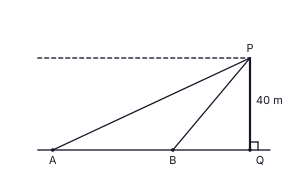

අමයා සහ ප්රදීප් යන දෙදෙනාම පුස්තකාලයක් සඳහා ඡායා පිටපත් යන්ත්රයක් මිලදී ගැනීමට කැමැත්තෙන් සිටිති. එහි මුදල් මිල රු. 60 000 කි.
| අමයාගේ ක්රමය | ප්රදීප්ගේ ක්රමය |
|---|---|
| ඇය රු. 60 000 ක බැංකු ණයක් වසරක කාලයකට වසරකට 14% ක සරල පොලියට ගන්නා අතර, වසර අවසානයේ දී ණය මුදල පොලිය සමග එක් වරකට ගෙවා සමථයට පත් කරයි. | ඔහු මිල සමාන මාසික වාරික 12 කින් ගෙවයි. සෑම වාරිකයකම මිලෙන් රු. 5 000 ක් අඩංගු වන අතර වසර සඳහා අය කරන මුළු පොලිය රු. 5 460 කි. පොලිය අය කරනුයේ සෑම මසකම ගෙවා නොමැති මිලේ ඉතිරි කොටස (අඩුවන ශේෂය) මතය. |
y = x2 − 4x − 5 ශ්රිතයේ −2 ≤ x ≤ 6 සඳහා අගයන් දැක්වෙන අසම්පූර්ණ වගුවක් පහත දැක්වේ. ශ්රිතයේ ප්රස්තාරය සිරස් රේඛාවකට සමමිතික වේ.
| x | −2 | −1 | 0 | 1 | 2 | 3 | 4 | 5 | 6 |
|---|---|---|---|---|---|---|---|---|---|
| y | 7 | 0 | −5 | −8 | −9 | −8 | .... | 0 | 7 |
(b) ඒ ඇසුරෙන් ශ්රිතය y = (x + p)(x + q) ආකාරයෙන් ලියන්න.
(a) ප්රස්තාරය ඇසුරෙන් y < −6 වන x හි අගය පරාසය සොයන්න.
(b) AB දිග පළමුවන දශමස්ථානයට සොයන්න.
PQ යනු සමතලා බිමක පිහිටි කර්මාන්තශාලාවක සිරස් දුම් ටැඹ වන අතර PQ = 40 m වේ. රූපයේ දැක්වෙන පරිදි බසයක් A ලක්ෂ්යයේ ද මෝටර් රථයක් B ලක්ෂ්යයේ ද බිම පිහිටා ඇත. A, B හා Q එකම සරල රේඛාවක පිහිටයි. P සිට A හි අවරෝහණ කෝණය 25° ද B හි අවරෝහණ කෝණය 50° ද වේ. රූපය ඔබේ පිළිතුරු පත්රයට පිටපත් කරන්න.

කර්මාන්තශාලාවක AB = (2x + 3) cm ද BC = (x + 6) cm ද වූ ABCD සෘජුකෝණාස්රාකාර ලෝහ තහඩුවකින් රූපයේ දැක්වෙන පරිදි පාදයේ දිග x cm වූ සමචතුරස්රාකාර සිදුරක් කපා ඉවත් කර ඇත. ඉතිරි වන ලෝහයේ වර්ගඵලය 93 cm2 කි.

බසයක් මගින් වැඩිහිටියන් හා ළමුන් 40 දෙනෙකුගෙන් යුත් කණ්ඩායමක් විනෝද චාරිකාවක් සඳහා රැගෙන යයි. වැඩිහිටි ප්රවේශ පත්රයක් රු. 90 ක් ද ළමා ප්රවේශ පත්රයක් රු. 60 ක් ද වේ. ප්රවේශ පත්රවලින් එකතු වූ මුළු මුදල රු. 2 850 කි. වැඩිහිටියන් ගණන x ද ළමුන් ගණන y ද යැයි ගන්න.
පුස්තකාලයකින් දින 30 ක් තුළ සෑම දිනකම ලබා ගත් පොත් ගණන පහත වගුවේ දැක්වේ.
| ලබා ගත් පොත් ගණන | 10 – 19 | 20 – 29 | 30 – 39 | 40 – 49 | 50 – 59 | 60 – 69 |
|---|---|---|---|---|---|---|
| දින ගණන | 1 | 2 | 6 | 8 | 7 | 6 |